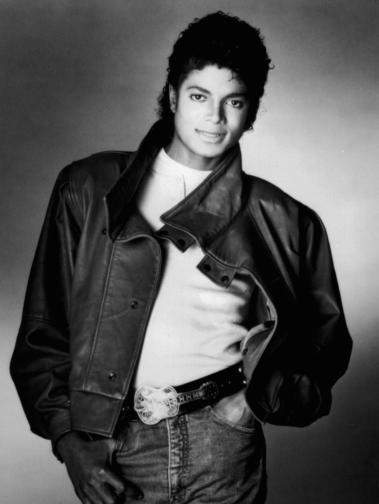

Michael Joseph Jackson (29. srpna 1958 Gary, Indiana 25. června 2009 Los Angeles, Kalifornie) byl americký popový zpěvák, skladatel, tanečník, choreograf, producent a mecenáš afroamerického původu. Zařadil se na třetí místo nejprodávanějších interpretů po skupině The Beatles a zpěvákovi Elvisu Presleym. Jeho desky Thriller (1982), Bad (1987), Dangerous (1991) a HIStory (1995) patří mezi nejvýznamnější v oblasti pop music. Album Thriller je nejprodávanějším albem všech dob, prodalo se ho 110 milionů kusů. Jackson je označován za „Krále popu“ („The King of Pop“) a za jednu z nejslavnějších osob historie. V roce 2006 byl zapsán do Guinnessovy knihy rekordů jakožto nejúspěšnější interpret všech dob. Byl zástupcem konvenčního popu a taneční hudby, vycházející ze soulu. Kromě svého charakteristicky vysokého hlasu, rytmického cítění a tanečních schopností byl znám i jako velký perfekcionista. Za svoji kariéru získal celkem 13 cen Grammy a 26 cen American Music Award.
Byl to zpevak.
